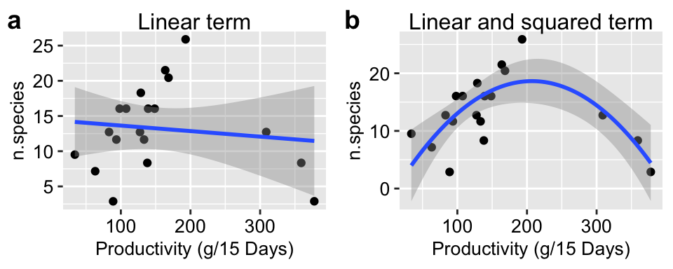
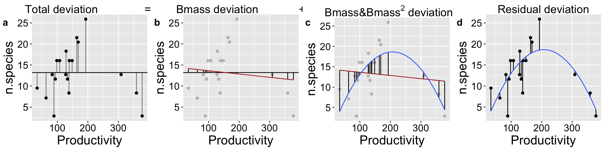
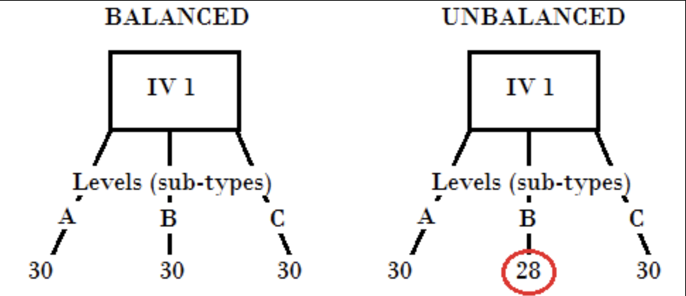
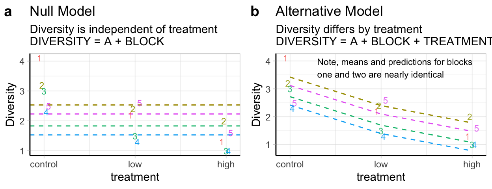
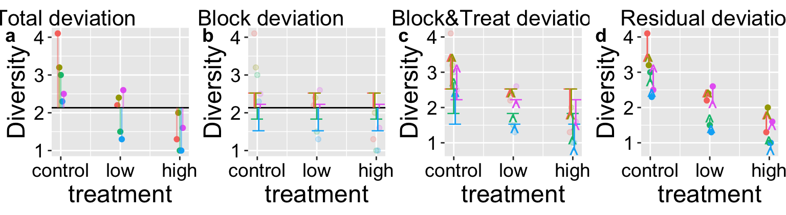

linear_term <- lm(n.species ~ Biomass, bmass)
poly_term <- lm(n.species ~ Biomass + Biomass2, bmass %>% mutate(Biomass2 = Biomass^2))21. Two predictors
Motivating scenarios: We have numerous explanatory variables and want to develop an synthetic model.
Learning goals: By the end of this chapter you should be able to
- Write down and interpret longer and more complex linear models.
- Interpret a polynomial regression and run one in R.
- Interpret and run two factor ANOVAs in R.
- Calculate TYPE I sums of squares.
Review of Linear Models
A linear model predicts the response variable, as \(\widehat{Y_i}\) by adding up all components of the model.

\[\begin{equation} \hat{Y_i} = a + b_1 y_{1,i} + b_2 y_{2,i} + \dots{} (\#eq:predlong) \end{equation}\]
Linear models we have seen
- One sample t-tests: \(\widehat{Y} = \mu\)
- Two sample t-tests: \(\widehat{Y_i} = \mu + A_i\) (\(A_i\) can take 1 of 2 values)
- ANOVA: \(\widehat{Y_i} = \mu + A_i\) (\(A_i\) can take one of more than two values)
- Regression \(\widehat{Y_i} = \mu + X_i\) (\(X_i\) is continuous)
So far we’ve mainly modeled a continuous response variable as a function of one explanatory variable. But linear models can include multiple predictors – for example, we can predict Dragon Weight as a function of both a categorical (spotted: yes/no) and continuous variable in the same model.
Test statistics for a linear model
- The \(t\) value describes how many standard errors an estimate is from its null value.
- The \(F\) value quantifies the ratio of variation in a response variable associated with a focal explanatory variable (\(MS_{model}\)), relative to the variation that is not attributable to this variable (\(MS_{error}\)).
Assumptions of a linear model
Remember that linear models assume
- Linearity: That observations are appropriately modeled by adding up all predictions in our equation.
- Homoscedasticity: The variance of residuals is independent of the predicted value, \(\hat{Y_i}\) is the same for any value of X.
- Independence: Observations are independent of each other (aside from the predictors in the model).
- Normality: That residual values are normally distributed.
- Data are collected without bias as usual.
Polynomial regression example
We note that linear models can include e.g. squared, and geometric functions too, so long as we get out predictions by adding up all the components of the model.
A classic example of a linear model is a polynomial regression, in which we predict some response variable as a function of a predictor and higher order terms of the predictor. The most common polynomial regression includes the explanatory variable and its square value @ref(eq:polynomial).
\[\begin{equation} \begin{split} \widehat{Y_i} = a + b_1 \times y_{1,i} + b_2 \times X_{2,i}\\ \\ \text{ where } X_{2,i} = X_{1,i}^2 \end{split} (\#eq:polynomial) \end{equation}\]
Often including a cubic, or even a quadratic term is useful – but be thoughtful before adding too many in – each additional term takes away from our degrees of freedom, complicates interpretation, and may overfit the data. Let your biological intuition and statistical reasoning guide you.
Polynomial regression example
Let’s revisit our example polynomial regression example predicting the number of species from the productivity of the plot to work through these ideas. Recall that
- A simple linear regression did not fit the data well AND violated assumptions of a regression, as residuals were large and positive for intermediate predictions and large and negative for large or small predictions.
- Including a squared term improved the model fit and had the data meet assumptions.
Let’s write a descriptive equation for each model
\[\text{N.SPECIES = CONSTANT + PRODUCTIVITY}\] \[\text{N.SPECIES = CONSTANT + PRODUCTIVITY + PRODUCTIVITY}^2\]
We present these models in Figure 1. See that we can add a polynomial fit to our ggplot by typing formula = y ~ poly(x, 2, raw = TRUE) into the geom_smooth function.
bmass <- tibble( Biomass = c(192.982,308.772,359.064,377.778,163.743,168.421,128.655,98.246,107.602,93.567,83.041,33.918,63.158,139.181,148.538,133.333,127.485,88.889,138.012), n.species = c(25.895,12.729,8.342,2.885,21.504,20.434,18.293,16.046,16.046,11.655,12.725,9.515,7.16,16.042,16.042,11.655,12.725,2.88,8.338))
base_plot <- ggplot(bmass, aes(x = Biomass, y = n.species))+ geom_point()+ xlab("Productivity (g/15 Days)" )
linear_plot <- base_plot + labs(title = "Linear term") +
geom_smooth(method = 'lm')+theme(axis.text = element_text(size = 10),axis.title = element_text(size = 10),plot.title = element_text(size = 12))
polynomial_plot <- base_plot + labs(title = "Linear and squared term") +
geom_smooth(method = 'lm',formula = y ~ poly(x, 2, raw = TRUE))+theme(axis.text = element_text(size = 10),axis.title = element_text(size = 10), plot.title = element_text(size = 12))
plot_grid(linear_plot, polynomial_plot, labels = c("a","b"))

Fitting polynomial regressions in R
Fitting a model with a linear term in R should look familiar to you. linear_term <- lm(n.species ~ Biomass, bmass)
There are a bunch of ways to add a polynomial term.
lm(n.species ~ poly(Biomass, degree = 2, raw = TRUE), bmass)Is what we typed into ourgeom_smoothfunction above. If we typeddegree = 3, the model would include a cubed term as well.
lm(n.species ~ Biomass + I(Biomass^2), bmass)Is a more explicit way to do this. When doing math to variables in our linear model we need to wrap them inI()or R gets confused and does weird things.
lm(n.species ~ Biomass + Biomass2, bmass %>% mutate(Biomass2 = Biomass^2))Or we canmutateto add a squared transform the data before making our model. NOTE: I did not pipe the mutate intolm(). That’s becauselm()does take things from the standard%>%pipe. If you want to pipe intolm(), you will need themagrittrpackage and then you can use a special pipe, %$%, so…bmass %>% mutate(Biomass2 = Biomass^2) %$% lm(n.species ~ Biomass + Biomass2)will work.
Interpretting the output of a polynomial regression – model coefficents
So, let’s look at this polynomial regression
summary.lm(poly_term)
Call:
lm(formula = n.species ~ Biomass + Biomass2, data = bmass %>%
mutate(Biomass2 = Biomass^2))
Residuals:
Min 1Q Median 3Q Max
-8.9394 -1.4605 -0.3453 2.5914 7.3527
Coefficients:
Estimate Std. Error t value Pr(>|t|)
(Intercept) -2.2887063 4.4420728 -0.515 0.613435
Biomass 0.2020729 0.0511573 3.950 0.001146 **
Biomass2 -0.0004878 0.0001161 -4.200 0.000678 ***
---
Signif. codes: 0 '***' 0.001 '**' 0.01 '*' 0.05 '.' 0.1 ' ' 1
Residual standard error: 4.384 on 16 degrees of freedom
Multiple R-squared: 0.5316, Adjusted R-squared: 0.473
F-statistic: 9.078 on 2 and 16 DF, p-value: 0.002318The output of this model should look familiar. Our rows are
(Intercept)– the number of species we would have if we followed our curve to 0 productivity. That this value is -2.2.9 highlights the idea that we should not make predictions outside of the range of our data. Of course, we wouldn’t predict a negative number of species ever…
Biomass– This describes how the number of species changes with a linear increase in productivity. It’s critical to see that this DOES not mean that the number of species always increase with productivity. That’s because of the next term,
Biomass2– This describes how the number of species changes with productivity squared. The negative sign means that the number of species decreases with the square of productivity. Polynomial regressions are often used in these cases where intermediate values are largest or smallest, so it’s normal to see contrasting signs for the linear and squared terms.
Writing down this equation, we predict species number as
\[\widehat{n.species}_i = -2.29 + 0.202 \times Biomass_i -0.000488 \times Biomass_i^2\] So, for example if we had a plot with a productivity of 250 g/15 Days, we would predict it had \[\begin{equation} \begin{split} \widehat{n.specie}{s_{|Biomass=250}} &= -2.29 +0.202 \times 250 -0.000488 \times 250^2\\ &= 17.71 \end{split} (\#eq:polynomial) \end{equation}\]
A value which makes sense, as it seems to be where out curve intersects with 250 in Figure 1 B.
Our columns, Estimate, Std. Error, t value, and Pr(>|t|) should also feel familiar, all interpretations are the same as usual. The standard error describes the uncertainty in the estimate, the t describes how many standard errors away from zero the estimate is, and the p-value describes the probability that a value this many standard errors away from zero would arise if the null where true. One thing though
The p-values in this output do not describe the statistical significance of the predictors!! DO NOT INTERPRET THESE P-VALUES AS SUCH
One way to think about this is to just look at our simple linear model which shows basically no association between biomass and species number (and the association it shows it slightly negative).
broom::tidy(linear_term) %>% mutate_at(.vars = c("estimate"), round, digits = 4 ) %>%mutate_at(.vars = c("std.error"), round, digits = 3 ) %>% mutate_at(.vars = c("statistic"), round, digits = 4 )%>% mutate_at(.vars = c("p.value"), round, digits = 5 ) %>%kable()| term | estimate | std.error | statistic | p.value |
|---|---|---|---|---|
| (Intercept) | 14.4251 | 2.777 | 5.1942 | 0.00007 |
| Biomass | -0.0078 | 0.015 | -0.5102 | 0.61648 |
The summary.lm() output still usefully provides our estimates and uncertainty in them – so don’t ignore it!
An ANOVA approach
So how do we get significance of each term? We look at the ANOVA output!
anova(poly_term)Analysis of Variance Table
Response: n.species
Df Sum Sq Mean Sq F value Pr(>F)
Biomass 1 9.90 9.90 0.5151 0.4832884
Biomass2 1 339.02 339.02 17.6417 0.0006782 ***
Residuals 16 307.47 19.22
---
Signif. codes: 0 '***' 0.001 '**' 0.01 '*' 0.05 '.' 0.1 ' ' 1We now conclude that the association between n.species and the linear term of Biomass would be quite expected from the null. How do we square these ideas? I think of the significance of the linear term as how weird it would be to see a non-zero linear estimate in the absence of a squared term. However, this is not fully correct, as this P-value differs from the one above with just the linear term. To make sense of this, let’s dig into how we calculate the sums of squares for these larger models.
“Sequential” Type I Sums of squares
We’ll see in this and the next section that there’s a real issue in which variable we attribute our sums of squares to in larger linear models.
In many cases (see below) Sequential “Type I” sums of squares make the most sense. Here we
- Calculate \(SS_{error}\) and \(SS_{total}\) as we always do! (Figure 2 A, D)
- Calculate the \(SS_{thing1}\) (in this case Biomass), as if it where the only thing in the model, \(\widehat{Y_{i|bmass}}\). (Figure 2 B).
- Calculate the \(SS_{thing2}\) (in this case \(Biomass^2\)), as the deviation of predicted values from a model with both things in it, \(\widehat{Y_{i|bmass,bmass^2}}\), minus predictions from a model with just thing1 in it, \(\widehat{Y_{i|bmass}}\) (Figure Figure 2 C).

We can calculate these sums of squares in R as follows, and then compute mean squares and p-values. Before I do this, I make a tibble with prediction from both the simple linear model with just a linear term, and the fuller linear model with the linear and squared term.
combine_models <- full_join(augment(linear_term) %>%
dplyr::select(n.species, Biomass, .fitted_lin = .fitted, .resid_lin = .resid),
augment(poly_term) %>%
dplyr::select(n.species, Biomass, .fitted_full = .fitted, .resid_full= .resid),
by = c("n.species", "Biomass"))
combine_models %>%
summarise(ss_tot = sum( (n.species - mean(n.species))^2 ),
ss_bmass = sum( (.fitted_lin - mean(n.species))^2 ),
ss_bmass2 = sum( (.fitted_full - .fitted_lin )^2 ),
ss_error = sum( (n.species - .fitted_full)^2 ),
#df
df_bmass = 1, df_bmass2 = 1, df_error = n() - 3,
#
ms_bmass = ss_bmass / df_bmass ,
ms_bmass2 = ss_bmass2 / df_bmass2 ,
ms_error = ss_error / df_error,
#
F_bmass = ms_bmass / ms_error, F_bmass2 = ms_bmass2/ ms_error,
p_bmass = pf(q = F_bmass, df1 = df_bmass, df2 = df_error, lower.tail = FALSE),
p_bmass2 = pf(q = F_bmass2, df1 = df_bmass2, df2 = df_error, lower.tail = FALSE)) %>% mutate_all(round,digits = 4) %>%DT::datatable( options = list( scrollX='400px'))You can scroll through the output above to see that our calculations match what anova() tells us!!!
Type I Sums of Squares (and others)
Calculating Sums of Squares sequentially, as we did in Figure Figure 2, is the default way R does things.
Sequential Type I sums of squares calculate the sums of squares for the first thing in your model first, then the second thing, then the third thing etc… This means that while our
- Sums of square, Mean squares, F values, and p-values might change, depending on the order in which variables are entered into our model.
- Parameter estimates and uncertainty in them will not change with order.
In general sequential sums of squares make the most sense when
- We are not interested in the significance of the earlier terms in our model, which we want to take account of, but don’t really care about their statistical significance.
- Designs are “balanced” (Figure 3), as in these cases, we get the same SS, F and P values regardless of the order that we put terms into the model.

In the next class, we will look into other ways to calculate the sums of squares.
Two categorical variables without an interaction
We saw that paired t-tests increase our power because they control for extraneous variation impacting each pair. We often want to use a similar study design for a study with more than two explanatory variables.
For example, in a randomized “Controlled Blocked Design” each “block” gets all treatments, and by including treatment in our model we can explain variability associated with block unrelated to our main question. In such models we don’t care about the statistical significance of the block, we just want to use block to explain as much variation as possible before considering treatment.
In the study below, researchers wanted to know if the presence of a fish predator impacted diversity pf the marine zooplankton in the area. To find out they introduced the zooplankton with no, some, or a lot of fish, in mesh bags in a stream. Each stream got three such bags – one with no, one with some, and the other with many fish. This was replicated at five streams, so each stream is a “Block”.


Estimation and Uncertainty
The raw data are presented below, with means for treatments in the final column.
| treatment | Block: 1 | Block: 2 | Block: 3 | Block: 4 | Block: 5 | mean_diversity |
|---|---|---|---|---|---|---|
| control | 4.1 | 3.2 | 3.0 | 2.3 | 2.5 | 3.02 |
| low | 2.2 | 2.4 | 1.5 | 1.3 | 2.6 | 2.00 |
| high | 1.3 | 2.0 | 1.0 | 1.0 | 1.6 | 1.38 |
We can conceive of this as a linear model, in which we predict diversity as a function of block and treatment
\[DIVERSITY = BLOCK + TREATMENT\] We enter the model into R as follows
fish_dat <- read_csv("https://whitlockschluter3e.zoology.ubc.ca/Data/chapter18/chap18e2ZooplanktonDepredation.csv") %>%
mutate(treatment = fct_relevel(treatment, c("control", "low", "high")))
wrong_fish_lm <- lm(diversity ~ block + treatment, data = fish_dat)
broom::tidy(wrong_fish_lm) %>% mutate_at(.vars = c("estimate"), round, digits = 3 ) %>%mutate_at(.vars = c("std.error"), round, digits = 3 ) %>% mutate_at(.vars = c("statistic"), round, digits = 3 )%>% mutate_at(.vars = c("p.value"), round, digits = 7 ) %>%kable()| term | estimate | std.error | statistic | p.value |
|---|---|---|---|---|
| (Intercept) | 3.50 | 0.384 | 9.109 | 0.0000019 |
| block | -0.16 | 0.099 | -1.613 | 0.1350936 |
| treatmentlow | -1.02 | 0.344 | -2.968 | 0.0127918 |
| treatmenthigh | -1.64 | 0.344 | -4.772 | 0.0005788 |
NOTE Uhhohh. Something went wrong here. Why is there only one value for block, when there are five? It’s because R thought bock was a number and ran a regression. Let’s clarify this for R by mutating black to be a factor.
fish_dat <- mutate(fish_dat, block = factor(block))
fish_lm <- lm(diversity ~ block + treatment, data = fish_dat)
broom::tidy(fish_lm) %>% mutate_at(.vars = c("estimate"), round, digits = 3 ) %>%mutate_at(.vars = c("std.error"), round, digits = 3 ) %>% mutate_at(.vars = c("statistic"), round, digits = 3 )%>% mutate_at(.vars = c("p.value"), round, digits = 6 ) %>%kable()| term | estimate | std.error | statistic | p.value |
|---|---|---|---|---|
| (Intercept) | 3.42 | 0.313 | 10.938 | 0.000004 |
| block2 | 0.00 | 0.374 | 0.000 | 1.000000 |
| block3 | -0.70 | 0.374 | -1.873 | 0.097945 |
| block4 | -1.00 | 0.374 | -2.676 | 0.028108 |
| block5 | -0.30 | 0.374 | -0.803 | 0.445316 |
| treatmentlow | -1.02 | 0.289 | -3.524 | 0.007805 |
| treatmenthigh | -1.64 | 0.289 | -5.665 | 0.000473 |
We take these estimates and uncertainty about them seriously, but fully ignore the t and p-values, as above. From here we predict diversity in
- Control predation in block one is just the intercept: \(3.42 - 0 - 0 = 3.42\).
- Control predation in block three is the intercept minus the mean difference between block three and block one: \(3.42 - 0.70 - 0 = 2.72\).
- High predation in block one is the intercept minus the mean difference between high predation and the control, \(3.42 - 0 - 1.64 = 1.79\).
- Low predation in block four is the intercept, minus the mean difference between block four and block one, minus the mean difference between low predation and the control treatment: 3.42 - 1.00 - 1.02 = 1.40.
Hypothesis testing with two categorical predictors
In this model, the null and alternative hypotheses are
- \(H_A:\) There is an association between predator treatment and zooplankton diversity – i.e. Under the alternative, we predict zooplankton diversity in this experiment as the intercept plus and the deviation associated with stream plus the effect of one or more treatments (Figure 4 b).

Again we test these hypotheses in an ANOVA framework
anova(fish_lm)Analysis of Variance Table
Response: diversity
Df Sum Sq Mean Sq F value Pr(>F)
block 4 2.3400 0.5850 2.7924 0.101031
treatment 2 6.8573 3.4287 16.3660 0.001488 **
Residuals 8 1.6760 0.2095
---
Signif. codes: 0 '***' 0.001 '**' 0.01 '*' 0.05 '.' 0.1 ' ' 1We conclude that predation treatment impacts zooplankton diversity, with diversity decrease as there are more predators. Because this is an experimental manipulation, we can conclude that predation decreased diversity.
Calcualating sums of squares

We again use the sequential method to calculate sums of squares because we first want to account for block. The code below shows you how anova() got its answer. But in our case we ignore the F-value and significance of block, as it’s in the model to soak up shared variation, not to be tested.
block_model <- lm(diversity ~ block, fish_dat)
full_model <- lm(diversity ~ block + treatment, fish_dat)
combine_models <- full_join(augment(block_model ) %>%
dplyr::select(diversity, block, .fitted_block = .fitted, .resid_block = .resid),
augment(full_model) %>%
dplyr::select(diversity, block, treatment, .fitted_full = .fitted, .resid_full= .resid),
by = c("diversity", "block"))
combine_models %>%
summarise(ss_tot = sum( (diversity - mean(diversity))^2 ),
ss_block = sum( (.fitted_block - mean(diversity))^2 ),
ss_treat = sum( (.fitted_full - .fitted_block)^2 ),
ss_error = sum( (diversity - .fitted_full)^2 ),
#df
df_block = n_distinct(block) - 1, df_treat = n_distinct(treatment) -1,
df_error = n() - 1,
#
ms_block = ss_block / df_block,
ms_treat = ss_treat / df_treat ,
ms_error = ss_error / df_error,
#
F_treat = ms_treat / ms_error,
p_bmass2 = pf(q = F_treat, df1 = df_treat, df2 = df_error, lower.tail = FALSE)) %>% mutate_all(round,digits = 4) %>%DT::datatable( options = list( scrollX='400px'))Post-hoc tests for bigger linear models
So we rejected the null hypothesis and conclude that predator abundance impacts zooplankton diversity. Which treatments differ? Again we, conduct a post-hoc test.
Instead of using the aov() function and piping the output to TukeyHSD(), here I’ll show you how to conduct a posthoc test with the glht() function in the multcomp package.
In the code below, I say I want to look at all pairwise comparisons between treatments, using the Tukey-Kramer method from Chapter @ref(anova).
library(multcomp)
glht(full_model, linfct = mcp(treatment = "Tukey")) %>%
summary()
Simultaneous Tests for General Linear Hypotheses
Multiple Comparisons of Means: Tukey Contrasts
Fit: lm(formula = diversity ~ block + treatment, data = fish_dat)
Linear Hypotheses:
Estimate Std. Error t value Pr(>|t|)
low - control == 0 -1.0200 0.2895 -3.524 0.01905 *
high - control == 0 -1.6400 0.2895 -5.665 0.00131 **
high - low == 0 -0.6200 0.2895 -2.142 0.14267
---
Signif. codes: 0 '***' 0.001 '**' 0.01 '*' 0.05 '.' 0.1 ' ' 1
(Adjusted p values reported -- single-step method)We conclude that diversity in both low and high predation differ significantly from both the control, no predation treatment, treatment. But we fail to reject the hypothesis that low and high predation treatments differ.